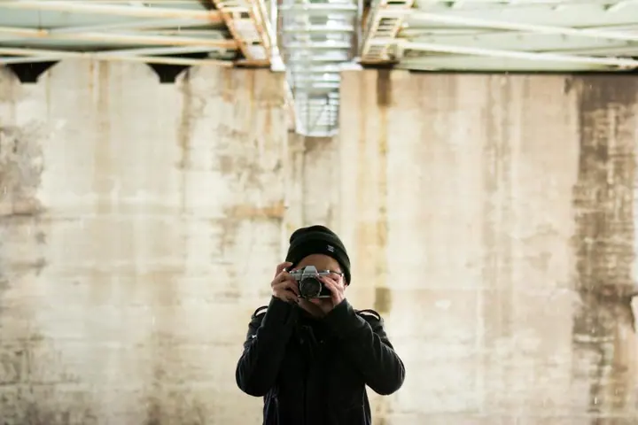

Portréty
Stylizované portréty v Ateliéru v Továrně v Modřanech, klidně na téma, o kterém už dlouho sníte. Domluvit se dají i služby vizážistky a doplňky.

Portrétní a rodinná fotografka
Jmenuji se Irena Horáková a portrétní fotografie je má srdcová záležitost. Stylizované portréty fotím v Ateliéru v Továrně v pražských Modřanech, páry a rodiny nejraději venku v přírodě. Nebojte se být odvážní, ráda s vámi vymyslím focení přesně na téma, které si dlouho přejete.
Zeptat se na termín
Stylizované portréty v Ateliéru v Továrně v Modřanech, klidně na téma, o kterém už dlouho sníte. Domluvit se dají i služby vizážistky a doplňky.
Focení párů, rodin, dětí i přátel venku na vybraných místech v přírodě. Na chvíli zastavíme drahocenný čas s vašimi nejbližšími.
Portrétům se věnuji nejčastěji. Baví mě vymýšlet stylizované snímky se svícením, kostýmy a doplňky, které vypadají trochu jako obraz. Fotíme v Ateliéru v Továrně v Modřanech a pokud chcete, přizvu i vizážistku.
Focení párů, rodin, dětí a přátel považuji za jedno z nejkrásnějších. Venku v přírodě se dá na chvíli zastavit čas s těmi nejbližšími. Fotografie pak upravuji a tónuji do stylu, který je mi blízký.
Ke každému z vás přistupuji individuálně a focení vymýšlíme společně. Své zkušenosti ráda předávám dál na kurzech portrétu a postprocesu pro začínající fotografy.

Napište mi na Instagram, Facebook nebo přes formulář. Termín je ideální domlouvat zhruba měsíc předem.
Společně vymyslíme téma, místo a oblečení. K focení lze domluvit vizážistku a doplňky.
Portréty fotíme hodinu v ateliéru v Modřanech, rodiny a páry venku na vybraných místech v přírodě.
Nejlepší záběry pro vás vyberu, barevně je vytónuji a vyretušuji. Hotové fotografie vám pošlu elektronicky ve vysoké kvalitě k tisku.
Balíček Portréty stojí 3 600 Kč a obsahuje hodinu v ateliéru a 3 upravené fotografie, každá další je za 600 Kč. Rodina & Lovestory v exteriéru stojí 2 500 Kč za 10 upravených fotografií, další za 200 Kč.
Výsledné fotografie vybírám já, náhledy k osobnímu výběru posílám jen výjimečně po předchozí domluvě. Neupravené RAW soubory neposkytuji.
Ano, u obou balíčků. Cena se pohybuje od 1 500 Kč za osobu.
Ráda vám vyrobím dárkový poukaz na jeden z balíčků. Platí jeden rok, stačí mi napsat.